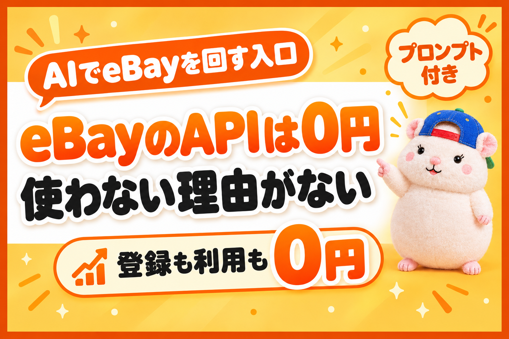

AIでeBayを回すには、APIが要ります。
そして、eBayのAPIは0円です。
以前、人間の外注さんに頼んでいたころ。
リサーチと出品の支払いは、多い月で約21.8万円でした。
いま、同じ仕事はAIがAPIで回しています。
APIの利用料は0円です。
「無料って、あとで請求が来るんじゃないの?」
来ません。
使える回数に上限があって、超えたらその日は止まるだけです。
この記事では、eBayのAPIが無料のしくみと、設定までAIに頼むやり方、やるかどうかでつく3つの差を書きます。
eBayのAPIは、ほんとうに0円
APIは、eBayが用意した、プログラム用の入口です。
AIがeBayの仕事をするときは、この入口を通ります。
お金の話は、これだけです。
- 開発者の登録は無料
- APIを呼ぶたびの料金はない
- 1日に使える回数に上限がある(窓口ごとにちがう)
- 上限は、申請すれば無料で上げてもらえる
うちは、相場を調べる窓口(Browse API)の上限を、1日5,000回から2万5,000回に上げてもらいました。
出品が7月の約1,400件から、9月に約6,700件まで増えたからです。
申請から3週間で通りました。
これも0円です。
上限に当たったこともあります。
7月27日、値段の調整プログラムが回数を使い切って、その日のリサーチが全部止まりました。
困りましたが、請求は1円も来ていません。
ここが、ほかのAPIとちがうところです。
AIやサーバーのAPIには、使った分だけ請求が来るものがあります。
設定のミスで、約150万円の請求が来たという海外の例もあります。
eBayのAPIは、使いすぎても止まるだけ。
お金がかかるのは、AIの月額(定額)だけです。
設定も、AIに頼める
「APIの設定って、プログラマーの仕事でしょ?」
ぼくもそう思っていました。
自分でやったのは、登録のフォームを入れて、届いたメールのボタンを押しただけです。
申請のくわしい手順は、昨日の記事に書きました。

そのあとの、キーを作る・店とつなぐ・テストする、はAIと一緒に進めました。
画面に出た文言をAIに伝えると、次に押すボタンを教えてくれます。
登録が通ったら、AIにこう頼めばOKです。
eBay Developers Programの登録が通りました。ここから先を一緒に進めて。
①本番(Production)のキーを作る手順を、1画面ずつ教えて
②アカウント削除の通知は「受け取る」か「免除」か、私の店の使い方で決めて
③店とつなぐ許可(OAuth)を出して、トークンをファイルに保存する
④注文を1件だけ読めるか、テストして
キーとトークンは、チャットに出さずにファイルにだけ保存して。
キー(Cert ID)とトークンは、パスワードと同じです。
チャットには貼らないでください。
つながったあとの店の設定も、APIでできます。
たとえば、ビジネスポリシー(支払い・返品・発送の決まり)や、発送しない国の設定。
画面でひとつずつ入れなくても、AIに希望を伝えれば、APIで作ってくれます。
作ったあとに、eBayから読み戻して、言ったとおりになっているかまで確かめます。
この「聞きながら設定まで進める」手順は、教科書の特典に入れています。
やっているか、いないかで、つく3つの差
① 作業の時間
ぼくの9月の作業は、月45分でした。
受注・在庫・出品・値段・朝の報告、この5本がぜんぶAPIでつながっています。
梱包と発送のほかは、ほぼAIとプログラムが回しています。
② 人に払うお金
前回は、外注さん21名で回していました。
リサーチと出品は1件80円、売れたら利益の10%。
いまは、その仕事のAPI代が0円です。
③ スピード
出品担当は、多い日で281件を出品します。
在庫の見張りは、10分に1回。
人間の手では、この回数は回せません。
無在庫で売り切れを見のがすと、注文が入っても仕入れられず、キャンセルになります。
見張りの回数は、そのまま店の評価につながります。
同じeBayで、同じ商品を売っていても、ここで差がつきます。
まとめ: 0円の入口を、使うかどうか
- eBayのAPIは0円: 回数の上限を超えたら止まるだけ。上限も無料で上げられる
- 設定はAIに頼める: 自分でやるのは登録のフォームだけ
- 差は3つ: 作業の時間・人に払うお金・スピード
ぼくの店は、AIでeBayの画面を開かず、公式のAPIでつなぐ形で回しています。
eBay Japanに問い合わせて、書面で回答をもらった範囲です。
ただ、AIをどこまで使うかは、eBayの規約を確かめたうえで、自己責任でお願いします。
入口は0円で、開いています。
まずは登録のフォームから、どうですか🐹
▼中の人🏠(レンタルスペース23部屋・売上1.5億)のレンスペ実録

▼ブログ(eBay×レンスペ、全記事まとめ)

▼この店のやり方は、ぜんぶ1冊にまとめてあります
リサーチ・出品・値付け・顧客対応まで、初月利益10万4,286円を出した実店舗の記録と手順を全部書いた教科書です。
読んだその日から、AI社員の作り方をそのまま真似できます。
『AI × eBay輸出の教科書 — 梱包以外、ぜんぶAI』


🎁 10/31(土)までに買った人には、11月下旬に発売予定の「AI顧客対応ツール」(販売予定価格9,800円)を発売時に無料でお渡しします(これまでに買った人も対象)。
内容・最新価格は販売ページをご確認ください。